全部 14 处
S3 严重 尺寸：底部条 线上没有独立底栏，改为设计稿的 40px
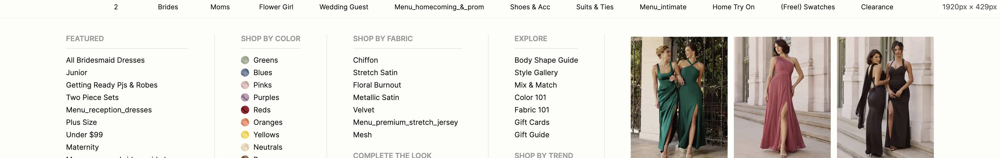
S4 严重 宽度：运营卡片 线上为 186px，改为设计稿的 230px
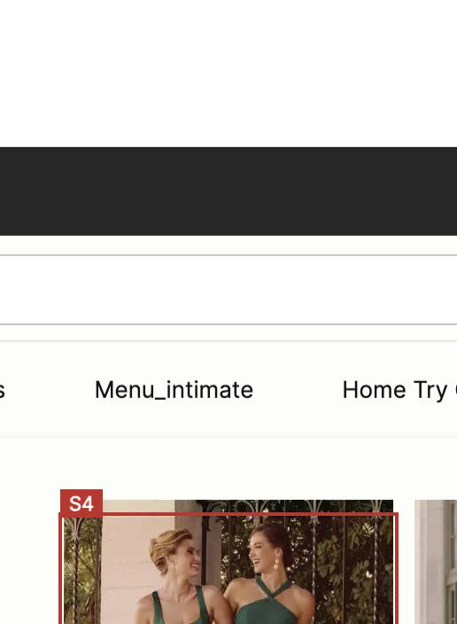
S5 严重 高度：运营卡片图 线上为 240px，改为设计稿的 298px
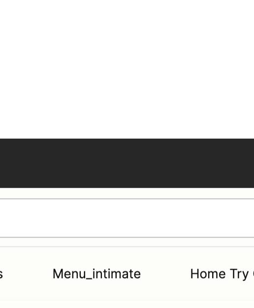
S6 严重 间距：卡片↔卡片 线上为 12px，改为设计稿的 20px
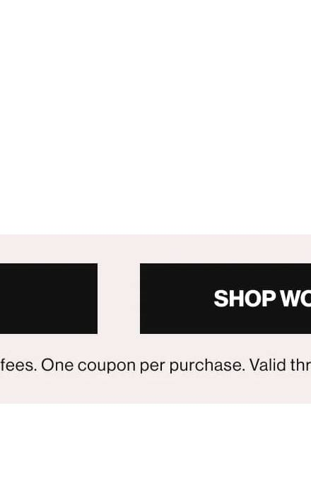
S7 严重 间距：Mesh↔COMPLETE THE LOOK 线上为 20px，改为设计稿的 30px
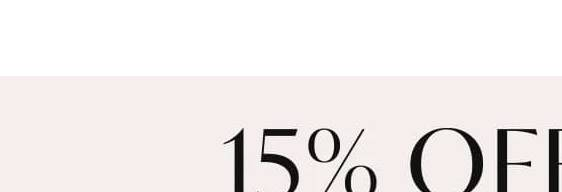
S8 严重 间距：Gift Guide↔SHOP BY TREND 线上为 20px，改为设计稿的 30px
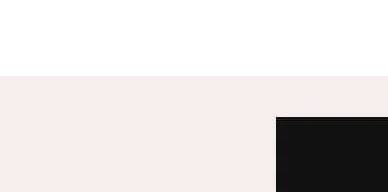
S9 严重 间距：工具入口分割线 线上没有 1px #e5e5e5，改为设计稿的 1px #e5e5e5
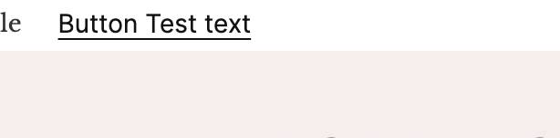
S10 严重 Icon：Home Try On 线上为 实心填充图，改为设计稿的 16×16 1px #121212 描边房子
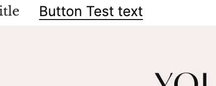
S11 严重 Icon：Swatches 线上为 叉形实心图，改为设计稿的 16×16 1px #121212 描边双方形色卡
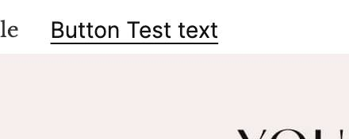
S12 严重 间距：工具入口分组 线上被 Flower Girl Dresses 拆开，改为设计稿的 Ships Now / Home Try On / Swatches 连续一组
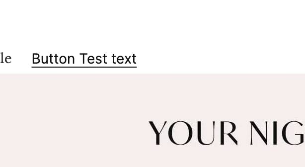
T2 中等 间距：列表项 线上为 7px，改为设计稿的 10px

T3 中等 行高：链接 线上为 24px，改为设计稿的 auto
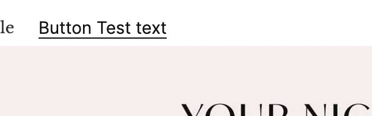
T4 中等 字号：卡片标题 线上为 13px，改为设计稿的 14px
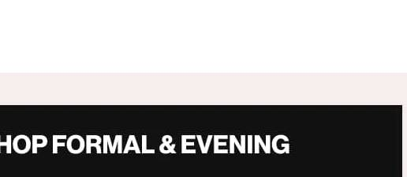
T5 中等 间距：工具icon↔文案 线上为 4px，改为设计稿的 5px
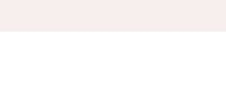
对齐的
链接字号 14/400/#121212；Ships Now 为描边闪电（不报实心）；COMPLETE THE LOOK 14/600/#999999、高 28px、底部分割线 1px #e5e5e5；列间距 50px + 1px #e5e5e5；面板上下内边距 30px；色块 icon 16×16；卡片标题条高 40px、背景 #ede1d3；圆角 0；标题→列表 10px
未测 / 不算缺陷
面板高度、各列宽为稿 HUG；BROWSE 线上为 FEATURED；SHOP BY SEASON、Sale、NEW! 无 DOM；底栏文案无节点；稿 2 卡 / 线 3 卡；圈外顶栏未测
设计侧备注
FEATURED 列：普通列表与工具三入口之间是 1px #e5e5e5，两侧 itemSpacing 15。工具三项连续：Ships Now / Home Try On / Swatches，icon 16×16 1px #121212 描边。本模块文字行高 AUTO。同列下一段标题 itemSpacing 30。
Created by white.zhang.